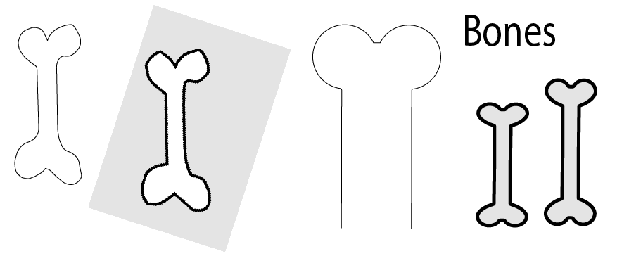
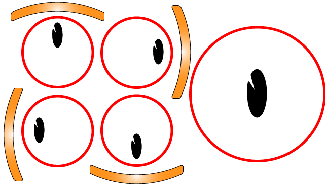
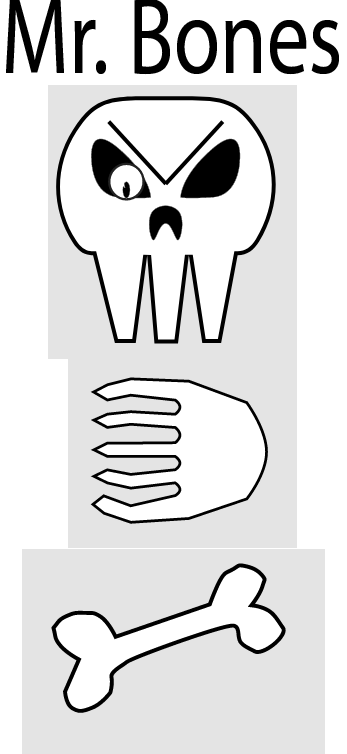

I animations-temaet, blev jeg reintroduceret til forskellige game design elementer, såsom mood board, mockups, og et gensyn med java scripts, samt css animation. Min fremgangs måde var for det meste slavisk A til B. Jeg havde en ide og jeg arbejdede rundt om denne, jeg ændrede selvfølgelig detaljer gennem processen men selve ideen forblev den samme igennem hele projektet. Min ide tog udgangspunkt i mit personlige logo samt gamle retro spil som super Super Mario. jeg skabte et design i XD som jeg senere ville oversætte til Illustrator hvor jeg ”rentegnede” min skabeloner fra XD. Selve spillet var lidt en blanding af ”flade spil” modellen og ”pop op” modellen jeg lavede det således at to elementer ville ”flade” fra højre og venstre ind imod midten af skærmen. På samme tid er der så et tredje element der langsomt kommer op nede fra, som man skal klikke på for at den går ned af igen. jeg valgte at basere designet af karakterer på 50/60’ernes Mascot design. Og musikken er bestem 16-bit for at holde den inde for rammen som jeg satte for mig selv.


